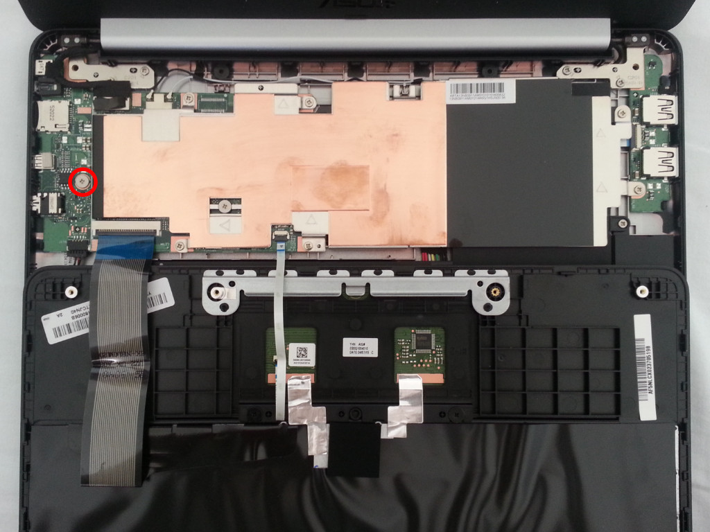
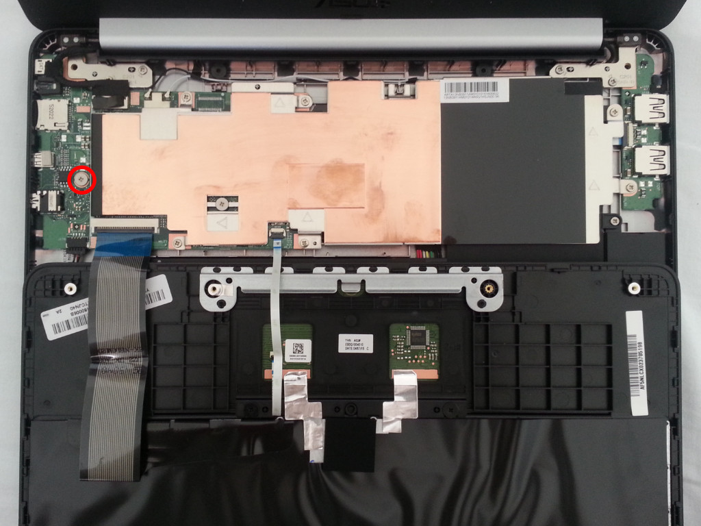
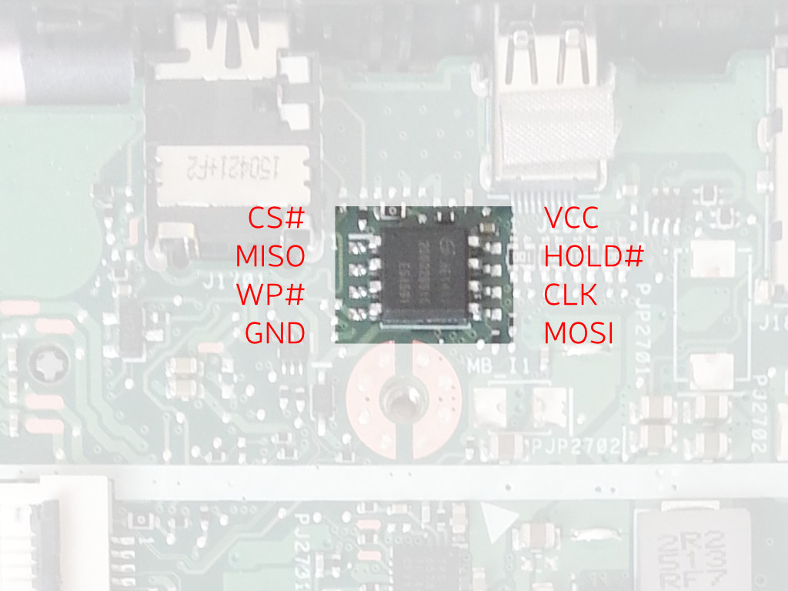

ASUS Chromebook C201 installation guide
These instructions are for installing Libreboot to the ASUS Chromebook C201.
Since the device ships with Coreboot, the installation instructions are the same before and after flashing Libreboot for the first time.
If you are using libreboot_src or git, then make sure that you built the sources first (see ../git/index.html#build).
Look at the list of ROM images to see which image is compatible with your device.
Libreboot can be installed internally from the device, with sufficient privileges.
The installation process requires using Google's modified version of flashrom,
that has support for reflashing the Chromebook's SPI flash.
Otherwise, flashing externally will work with the upstream flashrom version.
Google's modified version of flashrom is free software and its source code is made available by Google: flashrom.
It is not distributed along with Libreboot yet. However, it is preinstalled on the device, with ChromeOS.
Installing Libreboot internally requires sufficient privileges on the system installed on the device.
When the device has ChromeOS installed (as it does initially), it is necessary to gain root privileges in ChromeOS,
to be able to access a root shell.
Back to main index
Gaining root privileges on ChromeOS
In order to gain root privileges on ChromeOS, developer mode has to be enabled from the recovery mode screen and debugging features have to be enabled in ChromeOS.
Instructions to access the recovery mode screen and enabling developer mode are available on the page dedicated to depthcharge.
Once developer mode is enabled, the device will boot to the developer mode screen. ChromeOS can be booted by waiting for 30 seconds (the delay is shortened in Libreboot) or by pressing Ctrl + D
After the system has booted, root access can be enabled by clicking on the Enable debugging features link. A confirmation dialog will ask whether to proceed.
After confirming by clicking Proceed, the device will reboot and ask for the root password to set. Finally, the operation has to be confirmed by clicking Enable.
After setting the root password, it becomes possible to log-in as root.
A tty prompt can be obtained by pressing Ctrl + Alt + Next.
The Next key is the one on the top left of the keyboard.
Preparing the device for the installation
Before installing Libreboot on the device, both its software and hardware has to be prepared to allow the installation procedure and to ensure that security features don't get in the way.
Removing the write protect screw
Since part of the SPI flash is write-protected by a screw, it is necessary to remove the screw to remove the write protection and allow writing Libreboot to the read-only part of the flash.
To access the screw, the device has to be opened. There are 8 screws to remove from the bottom of the device, as shown on the picture below. Two are hidden under the top pads. After removing the screws, the keyboard plastic part can be carefully detached from the rest. Beware: there are cables attached to it! It is advised to flip the keyboard plastic part over, as shown on the picture below. The write protect screw is located next to the SPI flash chip, circled in red in the picture below. It has to be removed.
 

The write protect screw can be put back in place later, when the device is known to be in a working state.
Installing Libreboot to the SPI flash
The SPI flash (that holds Libreboot) is divided into various partitions that are used to implement parts of the CrOS security system.
Libreboot is installed in the read-only coreboot partition, that becomes writable after removing the write-protect screw.
Installing Libreboot internally, from the device
Before installing Libreboot to the SPI flash internally, the device has to be reassembled.
All the files from the veyron_speedy release (or build) have to be transferred to the device.
The following operations have to be executed with root privileges on the device (e.g. using the root account).
In addition, the cros-flash-replace script has to be made executable:
# chmod a+x cros-flash-replace
The SPI flash has to be read first:
# flashrom -p host -r flash.img
Note: it might be a good idea to copy the produced flash.img file at this point and store it outside of the device for backup purposes.
Then, the cros-flash-replace script has to be executed as such:
# ./cros-flash-replace flash.img coreboot ro-frid
If any error is shown, it is definitely a bad idea to go further than this point.
The resulting flash image can then be flashed back:
# flashrom -p host -w flash.img
You should also see within the output the following:
"Verifying flash... VERIFIED."
Shut down. The device will now boot to Libreboot.
Installing Libreboot externally, with a SPI flash programmer
Before installing Libreboot to the SPI flash internally, the device has to be opened.
The SPI flash is located next to the write protect screw. Its layout is indicated in the picture below. Note that it is not necessary to connect WP# since removing the screw already connects it to ground. Before writing to the chip externally, the battery connector has to be detached. It is located under the heat spreader, that has to be unscrewed from the rest of the case. The battery connector is located on the right and has colorful cables, as shown on the picture below.


All the files from the veyron_speedy release (or build) have to be transferred to the host.
The following operations have to be executed with root privileges on the host (e.g. using the root account).
In addition, the cros-flash-replace script has to be made executable:
# chmod a+x cros-flash-replace
The SPI flash has to be read first (using the right spi programmer):
# flashrom -p programmer -r flash.img
Note: it might be a good idea to copy the produced flash.img file at this point and store it outside of the device for backup purposes.
Then, the cros-flash-replace script has to be executed as such:
# ./cros-flash-replace flash.img coreboot ro-frid
If any error is shown, it is definitely a bad idea to go further than this point.
The resulting flash image can then be flashed back (using the right spi programmer):
# flashrom -p programmer -w flash.img
You should also see within the output the following:
"Verifying flash... VERIFIED."
The device will now boot to Libreboot.
Back to top of page.
Copyright © 2015 Paul Kocialkowski <contact@paulk.fr>
Permission is granted to copy, distribute and/or modify this document
under the terms of the Creative Commons Attribution-ShareAlike 4.0 International license
or any later version published by Creative Commons;
A copy of the license can be found at ../cc-by-sa-4.0.txt
Updated versions of the license (when available) can be found at
https://creativecommons.org/licenses/by-sa/4.0/legalcode
UNLESS OTHERWISE SEPARATELY UNDERTAKEN BY THE LICENSOR, TO THE
EXTENT POSSIBLE, THE LICENSOR OFFERS THE LICENSED MATERIAL AS-IS
AND AS-AVAILABLE, AND MAKES NO REPRESENTATIONS OR WARRANTIES OF
ANY KIND CONCERNING THE LICENSED MATERIAL, WHETHER EXPRESS,
IMPLIED, STATUTORY, OR OTHER. THIS INCLUDES, WITHOUT LIMITATION,
WARRANTIES OF TITLE, MERCHANTABILITY, FITNESS FOR A PARTICULAR
PURPOSE, NON-INFRINGEMENT, ABSENCE OF LATENT OR OTHER DEFECTS,
ACCURACY, OR THE PRESENCE OR ABSENCE OF ERRORS, WHETHER OR NOT
KNOWN OR DISCOVERABLE. WHERE DISCLAIMERS OF WARRANTIES ARE NOT
ALLOWED IN FULL OR IN PART, THIS DISCLAIMER MAY NOT APPLY TO YOU.
TO THE EXTENT POSSIBLE, IN NO EVENT WILL THE LICENSOR BE LIABLE
TO YOU ON ANY LEGAL THEORY (INCLUDING, WITHOUT LIMITATION,
NEGLIGENCE) OR OTHERWISE FOR ANY DIRECT, SPECIAL, INDIRECT,
INCIDENTAL, CONSEQUENTIAL, PUNITIVE, EXEMPLARY, OR OTHER LOSSES,
COSTS, EXPENSES, OR DAMAGES ARISING OUT OF THIS PUBLIC LICENSE OR
USE OF THE LICENSED MATERIAL, EVEN IF THE LICENSOR HAS BEEN
ADVISED OF THE POSSIBILITY OF SUCH LOSSES, COSTS, EXPENSES, OR
DAMAGES. WHERE A LIMITATION OF LIABILITY IS NOT ALLOWED IN FULL OR
IN PART, THIS LIMITATION MAY NOT APPLY TO YOU.
The disclaimer of warranties and limitation of liability provided
above shall be interpreted in a manner that, to the extent
possible, most closely approximates an absolute disclaimer and
waiver of all liability.
{kind=link}
{kind=link}